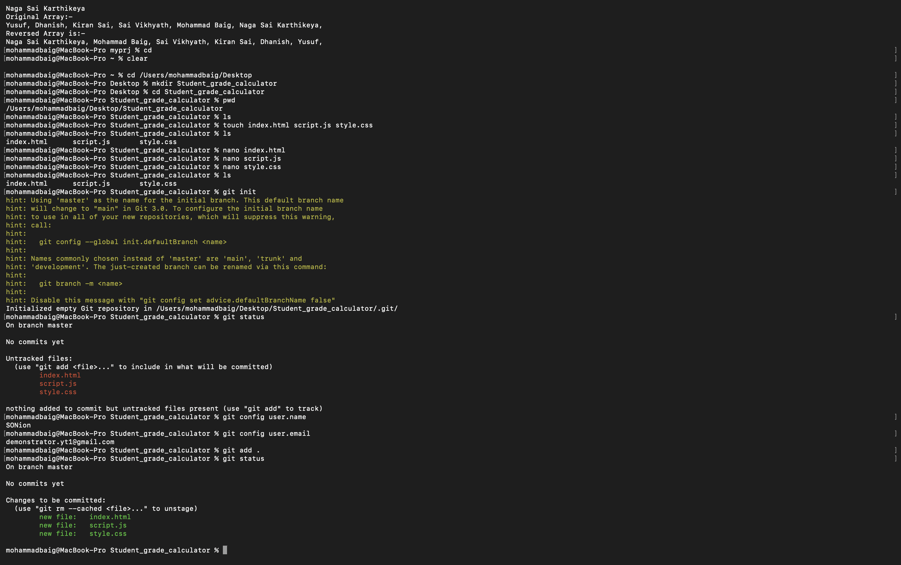
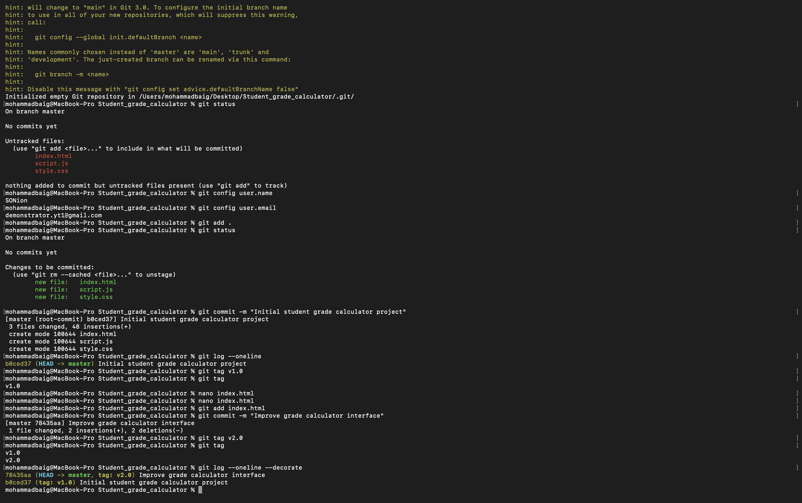
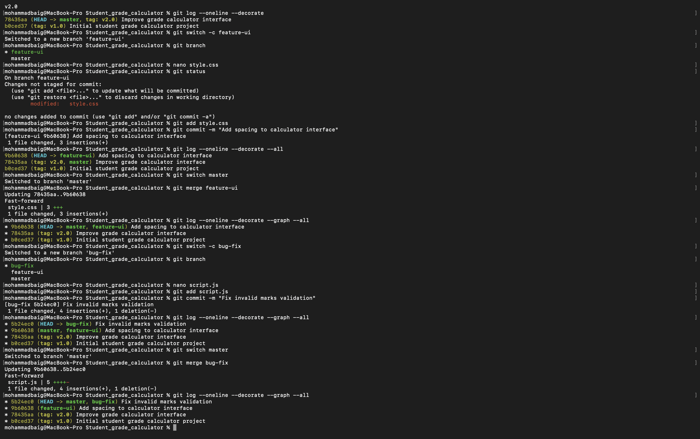
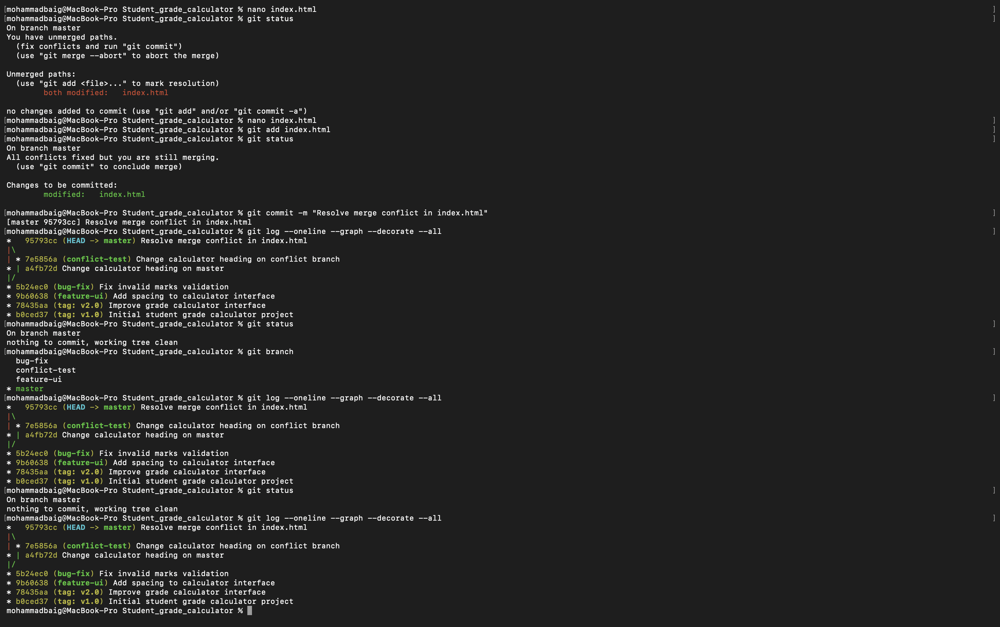
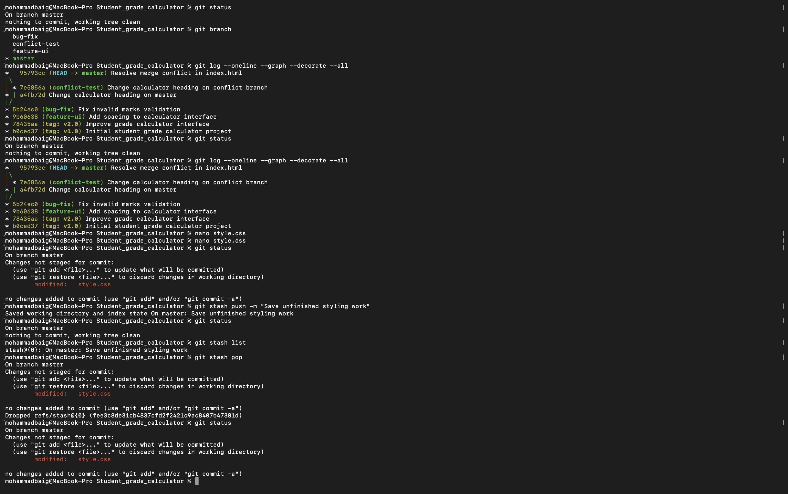
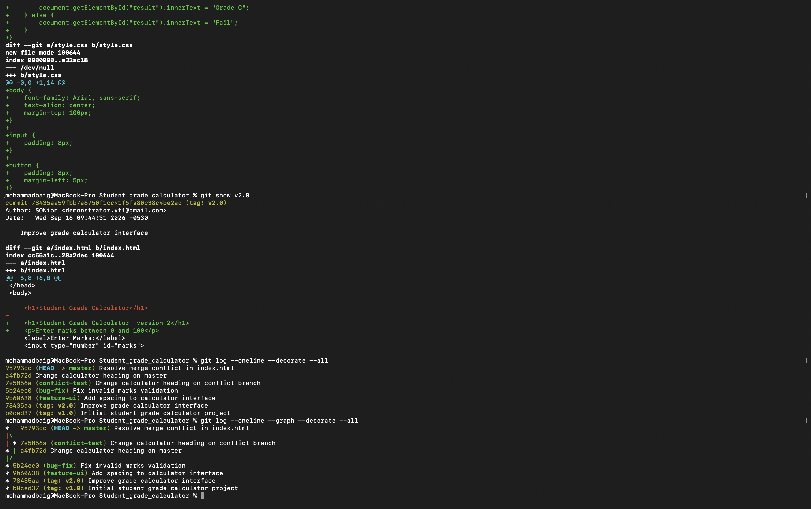
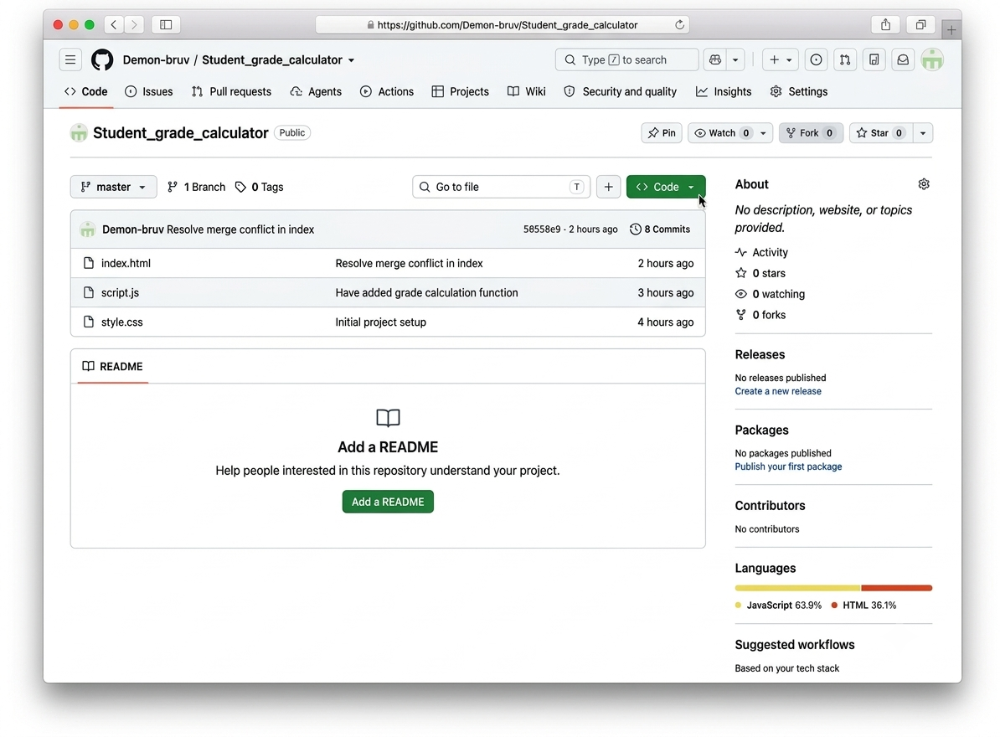
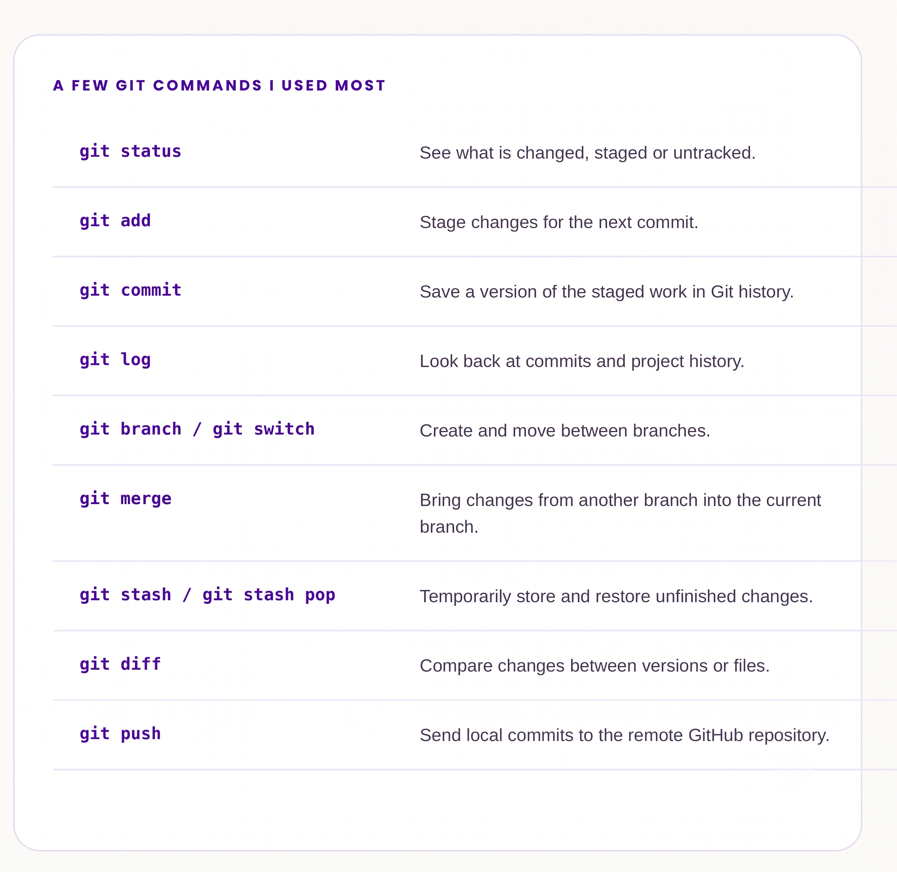

ACADEMIC SUBMISSION / 2026
ASSIGNMENT 1 & 2 - Shell Scripting & Git
Requirements at a glance
The assignment covers numerical operations, loops, student grading, file permissions, file analysis and array processing with a user-defined reverse function. It also requires meaningful variable names, indentation, comments, validation and suitable error handling.
| ID | TASK | FOCUS |
|---|---|---|
| Q1 | Numerical Analysis Utility | Compare two integers, calculate their sum, validate input, and divide with a zero check. |
| Q2 | Number Processing using Loops | Factorial with while, prime check, reverse with while, and digit sum with until. |
| Q3 | Student Performance Analyzer | Store marks in an array, validate them, and assign A/B/C/Fail grades. |
| Q4 | Project File and Permission Analyzer | Check file existence and readable / writable / executable permissions. |
| Q5 | File Discovery and Storage Analysis | List .txt files and display the five largest files recursively. |
| Q6 | Array Processing and Debugging | Store names, reverse them with a function, display both arrays, and run with bash -v. |
What The Question Asks
Read two integers, compare them, calculate their sum, validate the input and perform division only when the divisor is not zero.
How The Script Works
- The script reads and validates both numbers with an integer pattern before doing calculations.
- The comparison uses Bash numeric operators such as -gt and -lt rather than string comparison.
- The sum is calculated with arithmetic expansion.
- Before division, the second number is checked against zero. If it is zero, the script prints an error instead of attempting division.
#!/bin/bash
#SE25UCSE019-MOHAMMAD BAIG
echo "Coded by SE25UCSE019 - Mohammad Baig"
echo "Enter First Number"
read firstnum
if ! [[ $firstnum =~ ^-?[0-9]+$ ]]; then
echo "Invalid input. Please enter an integer."
exit 1
fi
echo "Enter Second Number"
read secondnum
if ! [[ $secondnum =~ ^-?[0-9]+$ ]]; then
echo "Invalid input. Please enter an integer."
exit 1
fi
if [ $firstnum -gt $secondnum ]; then
echo "First Number is Greater Than The Second One"
elif [ $firstnum -lt $secondnum ]; then
echo "First Number is Smaller Than The Second One"
else
echo "Both The Numbers Are Equal"
fi
sum=$(($firstnum + $secondnum))
echo "Sum of The Numbers is $sum"
if [ $secondnum -eq 0 ]; then
echo "Division by Zero is Not Allowed"
else
divresult=$(($firstnum / $secondnum))
echo "Result of Division is $divresult"
fiTerminal Output / Result Snapshot


What The Question Asks
Accept a non-negative integer and calculate its factorial, test whether it is prime, reverse it and find the sum of its digits.
How The Script Works
- The input is validated so the script accepts non-negative integer values.
- A while loop repeatedly multiplies the current value into the factorial and decreases the number.
- The prime check tests divisibility and stops early when a divisor is found.
- Another while loop extracts the last digit using modulo 10 and builds the reversed number.
- The digit-sum section uses an until loop as required by the question.
#!/bin/bash
#SE25UCSE019-MOHAMMAD BAIG
echo "Coded by SE25UCSE019 - Mohammad Baig"
echo "Enter A Number"
read num
if ! [[ $num =~ ^[0-9]+$ ]]; then
echo "Invalid input. Please enter a +ve integer."
exit 1
fi
original_num=$num
fact=1
while [ $num -gt 0 ]; do
((fact = fact * num))
((num--))
done
echo "Factorial is $fact"
i=2
is_prime=1
while [ $i -lt $original_num ]; do
if [ $(($original_num % $i)) -eq 0 ]; then
is_prime=0
break
fi
((i++))
done
if [ $is_prime -eq 1 ]; then
echo "Given Number is Prime"
else
echo "Given Number is Not A Prime"
fi
reverse=0
temp=$original_num
while [ $temp -gt 0 ]; do
digit=$((temp % 10))
reverse=$((reverse*10+digit))
temp=$((temp/10))
done
echo "Reverse is $reverse"
sum=0
temp2=$original_num
until [ $temp2 -eq 0 ]; do
digit=$((temp2 % 10))
sum=$((sum + digit))
temp2=$((temp2 / 10))
done
echo "Sum of the digits is $sum"Terminal Output / Result Snapshot

What The Question Asks
Store marks of multiple students in an array, validate the marks and assign A, B, C or Fail according to the given ranges.
How The Script Works
- The number of students is read first and validated as a non-negative integer.
- A marks array is created and filled inside a for loop.
- Each mark is checked to make sure it is an integer and does not exceed 100.
- A second loop reads each stored mark and checks the grade boundaries in descending order.
- If invalid data is entered, the script displays an error and exits with status 1.
#!/bin/bash
#SE25UCSE019-MOHAMMAD BAIG
echo "Coded by SE25UCSE019 - Mohammad Baig"
echo "Numer Of Students"
read num_of_students
if ! [[ $num_of_students =~ ^[0-9]+$ ]]; then
echo "Invalid input. Please enter a +ve integer."
exit 1
fi
marks=()
for(( i=0; i < num_of_students; i++ )); do
echo "Enter Marks of Student $((i+1))"
read Student_Marks
if ! [[ $Student_Marks =~ ^[0-9]+$ ]]; then
echo "Invalid input. Please enter a +ve integer."
exit 1
fi
if [ $Student_Marks -gt 100 ]; then
echo "Invalid Input. Please Enter Marks B/W 0-100"
exit 1
fi
marks[$i]=$Student_Marks
done
for (( i=0; iTerminal Output / Result Snapshot

What The Question Asks
Accept a filename, check whether it exists, then report whether it is readable, writable and executable.
How The Script Works
- The filename is read from the user.
- The -f test checks that the supplied name refers to a regular file.
- The -r, -w and -x tests check read, write and execute permissions.
- If the file is missing, the script prints an error and exits with a non-zero status.
#!/bin/bash
#SE25UCSE019 -Mohammad baig
echo "Coded by SE25UCSE019 - Mohammad Baig"
echo "Enter File Name"
read filename
if [ -f "$filename" ]; then
if [ -r "$filename" ]; then echo "File is readable"; else echo "File is not readable"; fi
if [ -w "$filename" ]; then echo "File is Writable"; else echo "File is not Writeable"; fi
if [ -x "$filename" ]; then echo "File is Executable"; else echo "File is not Executable"; fi
else
echo "Error. File Doesnot Exist"
exit 1
fiTerminal Output / Result Snapshot

What The Question Asks
Display all .txt files in the current directory and identify the five largest files in a specified directory including its subdirectories.
How The Script Works
- The .txt files are found using a for loop with the *.txt pattern.
- The -f test makes sure the matched item is a regular file.
- The directory is validated with -d before searching.
- find with -type f searches files recursively rather than directories.
- du -k provides sizes in KB, sort -nr puts the largest sizes first, and head -5 keeps the first five results.
#!/bin/bash
# SE25UCSE019 - MOHAMMAD BAIG
echo "Coded by SE25UCSE019 - Mohammad Baig"
for file in *.txt; do
if [ -f "$file" ]; then
echo "$file"
fi
done
echo "Enter directory"
read directory
if [ ! -d "$directory" ]; then
echo "Directory does not exist"
exit 1
fi
find "$directory" -type f -exec du -k {} + | sort -nr | head -5Terminal Output / Result Snapshot

What The Question Asks
Store names in an array, display the original array, reverse it using a user-defined function, display the reversed array and run the script with bash -v.
How The Script Works
- StudentNames is used as the array for the names entered by the user.
- The original array is displayed using array expansion that prints all elements.
- The script calculates the last array index by taking the array length minus one.
- ReverseArray is the user-defined function; it starts from the last index and stores each name into a new reversed array.
- The script is executed with bash -v so Bash prints the script lines as they are read.
#!/bin/bash
# SE25UCSE139 - MOHAMMAD BAIG
echo "Coded by SE25UCSE019 - Mohammad Baig"
echo "Enter No. Of students"
read NumofStudents
StudentNames=()
for (( i=0; i < NumofStudents; i++ )); do
echo "Enter Name Of Student $((i+1))"
read names
StudentNames[$i]=$names
done
echo "Original Array:- "
printf "%s, " "${StudentNames[@]}"
echo
lastindex=$(( ${#StudentNames[@]} - 1 ))
ReverseArray() {
i=0
for (( j=$lastindex; j>=0; j-- )); do
ReversedNames[i]=${StudentNames[j]}
((i++))
done
}
ReverseArray
echo "Reversed Array is:-"
printf "%s, " "${ReversedNames[@]}"
echoTerminal Output / Result Snapshot


Question 6(d) - Verbose execution with bash -v
The assignment specifically asks to execute the script with Bash's verbose option. The command used
was: bash -v Q6_Array_Processing.sh. With -v, Bash prints each script line as it reads
it, so the terminal shows both the source statements and the resulting prompts and output.
Verbose Run Output

What I did in this assignment
For this assignment I used Git to keep track of a small Student Grade Calculator project. I first created the local repository, added the project files and made commits. After that I created tags and branches, merged changes, created and resolved a merge conflict, used stash for unfinished work, checked the history and differences, and finally connected the project to GitHub and pushed it.
| # | REQUIREMENTS |
|---|---|
| 01 | Create the project, initialize Git, configure identity and add files. |
| 02 | Develop the project and maintain its history with staging and commits. |
| 03 | Create versions and mark them using tags such as v1.0 and v2.0. |
| 04 | Create feature and bug-fix branches and merge them into master. |
| 05 | Create a merge conflict, resolve it and complete the merge. |
| 06 | Use Git stash to temporarily save and restore unfinished work. |
| 07 | Use history and comparison commands to examine changes. |
| 08 | Connect the project to a remote repository and push it. |
Requirement 1 & 2 - Creating the project and project history
I first moved into the Student_grade_calculator folder and checked the current location with pwd. Then I used ls to see index.html, script.js and style.css. Next I ran git init, configured my Git username and email, checked status and staged the project files with git add. After staging the files, I made the first commit with the message Initial project setup, then committed script.js separately with the message Have added grade calculation function, and used git log-oneline to confirm both commits.

Requirement 3 - Creating versions with tags
After the first two commits, I created the first release tag using git tag v1.0 and checked it with git tag. I then improved index.html, committed the change and created v2.0. The decorated log showed the tags attached to the corresponding commits.

Requirement 4 - Feature and bug-fix branches
I created feature-ui and switched to it, added a line to the interface and committed the change. I switched back to master, created bug-fix, merged feature-ui and then merged bug-fix; Git reported nothing new to merge.

Requirement 5 - Creating and resolving a merge conflict
I created a conflict-test branch and changed index.html there, then committed it. After creating a separate master change to the same file, the second merge reported CONFLICT (content): Merge conflict in index.html. I resolved the file, staged it and completed the merge with the Resolve merge conflict in index commit.

Requirement 6 - Using Git stash for unfinished work
After the merge work, index.html had an uncommitted modification. I did not want to commit that unfinished change yet, so I used git stash. The working tree became clean; later git stash pop restored the modification. This stash cycle immediately preceded the final push covered in Requirement 8.

Requirement 7 - Checking history and comparing versions
I used git log-oneline --decorate --graph-all to see the commit history together with branches and tags. To compare the two tagged versions, I used git diff v1.0 v2.0. I also used git show v1.0 and git show v2.0 to inspect the individual tagged versions.

Requirement 8 - Connecting the project to GitHub
I connected the local repository to GitHub by adding a remote called origin and checked it with git remote -v. I pushed master with git push-u origin master, made the final index.html change, committed it with Finalize student grade calculator, pushed again and checked status.

Requirement 9: Git Commands Summary
A quick summary of the primary Git commands utilized throughout the development of this project.
